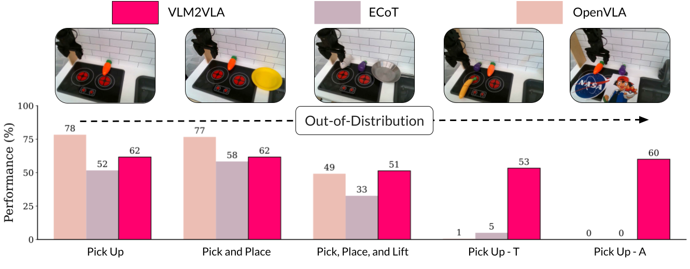

Actions as Language: Fine-Tuning VLMs into VLAs Without Catastrophic Forgetting

TLDR
We introduce VLM2VLA, a VLA model training paradigm that represents low-level robot actions as natural language to better align the robot fine-tuning data with the base VLM's representation space. This alignment, combined with parameter-efficient fine-tuning, better preserves the VLM's foundational reasoning during VLA fine-tuning. Through extensive experimentation, VLM2VLA enables strong VQA performance and zero-shot generalization to new scenarios.
Abstract
Fine-tuning vision-language models (VLMs) on robot teleoperation data to create vision-language-action (VLA) models is a promising paradigm for training generalist policies, but it suffers from a fundamental tradeoff: learning to produce actions often diminishes the VLM's foundational reasoning and multimodal understanding, which hinders generalization to novel scenarios, instruction following, and semantic understanding.
We argue that this catastrophic forgetting is due to a distribution mismatch between the VLM's internet-scale pretraining corpus and the robotics fine-tuning data.
Inspired by this observation, we introduce VLM2VLA: a VLA training paradigm whose core idea is to represent low-level actions using natural language by relabeling robot demonstration data.
This methodology better aligns the fine-tuning data to the base model's representation space, thereby mitigating the distribution mismatch while enabling effective robotic control.
As a result, the VLM can be fine-tuned on robot teleoperation data using a policy architecture that makes no modifications to the underlying VLM and without expensive co-training on internet-scale VLM datasets.
Through extensive Visual Question Answering (VQA) studies and real-world robotics experiments, we demonstrate that VLM2VLA preserves the VLM's core capabilities, enabling zero-shot generalization to novel tasks that require open-world semantic reasoning and multilingual instruction following.
The Core Idea: Aligning Actions with Language
Fine-tuning VLMs into robotic policies (VLAs) often leads to a critical problem: the model forgets its vast world knowledge. We argue this happens because of a fundamental "distribution mismatch" between the VLM's original internet-scale pretraining and the specialized, low-level action space of robotics. Our key insight is to address this problem at the data level: by re-representing robot actions as natural language, we align the fine-tuning data directly with the VLM's pretrained knowledge. This data transformation, combined with parameter-efficient fine-tuning strategies, such as Low-Rank Adaptation (LoRA), helps preserve the model's reasoning capabilities without expensive co-training or complex architectural changes.
Before fine-tuning, the base VLM (Gemma-3-12B-IT) assigns much higher probabilities to our natural language action descriptions than to standard, tokenized robot actions. This shows our data is better aligned with the model's original knowledge.
After fine-tuning, Traditional VLA training procedures often overfit to the robot training data, sacrificing their original reasoning capabilities for low-level action prediction (center). In contrast, VLM2VLA preserves the world understanding of the pretrained VLM (left), allowing the model to reason about potential safety risks instead of just motor commands.
Multimodal Understanding Evaluation
Comparison of VLMs and VLAs across multimodal understanding benchmarks. Our method preserves strong performance across diverse multimodal understanding tasks while maintaining robotic capabilities. The best and second best results for each benchmark are shown in bold and underlined, respectively.
| Method | #Params | MMMU | MMStar | MME | OCRBench | MMB-en | MMB-cn | TextVQA | DocVQA | InfoVQA | AI2D | ChartQA | RealWorldQA |
|---|---|---|---|---|---|---|---|---|---|---|---|---|---|
| Prismatic VLM | 7b | 35.0 | 38.8 | 1456.6 | 32.0 | 66.2 | 55.7 | 42.5 | 17.5 | 19.7 | 54.6 | 16.7 | 30.8 |
| OpenVLA | 7b | 26.3 | 0 | 0 | 0 | 0 | 43.0 | 0 | 0 | 0 | 0 | 0 | 0 |
| ECoT | 7b | 26.6 | 0 | 0 | 0.01 | 3.7 | 4.1 | 0 | 0 | 0 | 0 | 0 | 25.6 |
| Gemma-3-4b-it | 4b | 39.3 | 37.1 | 1205.8 | 70.2 | 68.6 | 64.3 | 61.5 | 68.8 | 40.9 | 70.5 | 50.3 | 44.0 |
| Gemma-3-12b-it | 12b | 46.0 | 46.3 | 1182.3 | 75.0 | 76.9 | 74.7 | 68.9 | 80.6 | 50.4 | 78.5 | 55.1 | 50.6 |
| Ours | 12b | 42.7 | 48.0 | 1391.7 | 63.9 | 68.5 | 67.6 | 64.9 | 78.4 | 46.2 | 74.0 | 58.3 | 43.3 |
Qualitative examples of VQA performance. Blue is Gemma-3-12B-IT, purple is VLM2VLA
Real Robot Experiments
We showcase our model's capabilities on numerous manipulation tasks, some requiring multilingual understanding, object generalization, and following complex, open-vocabulary instructions. We contrast our method to two state-of-the-art VLAs: OpenVLA and Embodied Chain of Thought (ECoT). Videos are shown below.

Comparative evaluation of VLA performance on in-distribution (ID) and out-of-distribution (OOD) robotic manipulation tasks. VLM2VLA maintains high success rates on OOD tasks, highlighting its superior generalization capabilities. Embodied Chain of Thought (ECoT) and VLM2VLA were fine-tuned on the Bridgev2 dataset, whereas OpenVLA was fine-tuned on the Open-X-Embodiment dataset.